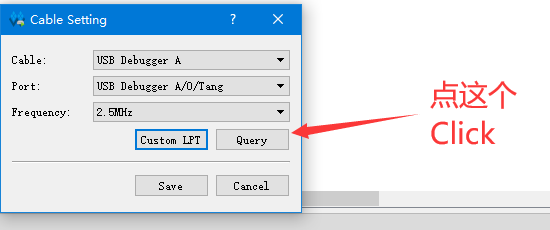

Note
编辑于2022.06.29
这里汇总一些常见问题，持续更新
Programmer 相关
首先确定设备管理器里面有两个converter，在进行下面的操作

与上图中一样的话说明电脑与板子连接没问题；不存在的话请更改 usb口 或者重新安装驱动。
下载频率
要注意下载频率应该为 2.5M或者更低的数值。
不然很可能导致一些奇怪的错误
点开查看操作步骤图片

点击下图中的 Frequency

接着再点击 Save 即可
下载失败
对于 Programmer (下载程序) 要求使用 这里 的文件。
下载后解压替换掉Gowin对应安装目录的Programmer文件夹即可。
不会替换的话可以在下载解压后的Programmer程序中手动添加对应下载文件来进行烧录。
ID code mismatch
这种情况是工程芯片与下载芯片不一致。
重新检查工程中的芯片型号（比如工程设置、引脚约束、各个IP中的型号）。
对于 Nano 9K 和 Primer 20K 型号选择应该分别如下：
点开查看正确型号选择
Nano 9K 应当选择的型号

Primer 20K 应当选择的型号

对于其他板子选择型号的时候与芯片丝印相对应就行。
下载卡住、下载非常慢
不要选中带有 Verify 选项的。
自己注意设置一下下载频率，一般设置为 2.5MHZ 不会有异常
点开查看操作步骤图片
点击下图中的 Frequency
接着再点击 Save 即可
找不到下载文件
一般来说生成的下载文件（拓展后缀为.fs）在工程目录下的 impl/pnr 文件夹里面。
点开查看相关图文说明

在上图中可以看到这个下载文件的路径为 /fpga_project1/impl/pnr/fpga_project1.fs
其中 fpga_project1 为工程目录，impl 为 IDE 生成的目录，然后所需要的文件位于 pnr 文件夹内
然后那个拓展名为 .fs 的文件就是下载到 fpga 的文件
No Gowin devices found
这种情况可以和上面的 下载失败 里面的内容一样替换 Programmer 文件夹。
Cabel open failed
参考上一步 No Gowin devices found 的操作后，再 programmer 里面进行下面操作：
点击顶部菜单栏的 Edit->Cable Setting->Cable->Query，然后 Save 即可
点开查看操作步骤图片
点击下图中的 Query
接着再点击 Save 即可
烧录结束后没反应
一般这种情况是没有选择正确的烧录文件。可以自己先对应着各个板子点灯文档里所选择的芯片型号来检查一下自己的工程，然后看看自己的代码是否有问题。
IDE 使用相关
使用 GAO
GAO 是高云半导体在线逻辑分析仪（Gowin Analyzer Oscilloscope）。安装高云 IDE 之后就能在对应的安装相对路径下看到相关文档了

目前测试过IDE v1.9.8.1和之前的版本可使用。其他新版的不行
查看IP文档
点开查看相关说明

修改设置过的IP
点开查看相关说明